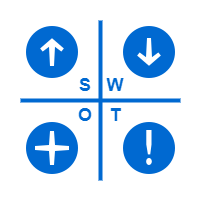

Licenca
To delo je na voljo pod pogoji slovenske licence Creative Commons 2.5:
priznanje avtorstva - nekomercialno - deljenje pod enakimi pogoji.
Celotna licenca je na voljo na spletu na naslovu http://creativecommons.org/licenses/by-nc-sa/2.5/si/. V skladu s to licenco je dovoljeno vsakemu uporabniku delo razmnoževati, distribuirati, javno priobčevati, dajati v najem in tudi predelovati, vendar samo v nekomercialne namene in ob pogoju, da navede avtorja oziroma avtorje in izdajatelja tega dela. Če uporabnik delo predela, kar pomeni, da ga spremeni, preoblikuje, prevede ali uporabi to delo v svojem delu, lahko predelavo dela ponudi na voljo le pod pogoji, ki so enaki pogojem iz te licence oziroma pod enako licenco.

Analiza
To je stopnja pri kateri pregledamo obstoječi sistem. Pregled sistema običajno vsebuje naslednje korake:
- analizo organizacije;
- opredelitev vseh težav, možnosti in/ali omejitev;
- določitev ciljev ter
- dogovor o obsegu
Pri pregledu sistema moramo pogledati širšo sliko – ne samo strojne opreme ali obstoječih struktur tabel, temveč celotno situacijo organizacije, ki zahteva preoblikovanje. Na primer, velika banka s centraliziranim upravljanjem ima drugačno strukturo in drugačen način delovanja od decentralizirane medijske organizacije, kjer lahko vsak urednik objavi novice na spletni strani. To se morda zdi nepomembno, vendar je razumevanje organizacije, za katero gradimo podatkovno bazo, ključnega pomena.
Enake zahteve pri banki in medijski organizaciji bi morale voditi do različnih oblik podatkovnih baz, ker sta organizaciji različni. Povedano drugače, rešitve, ki jo ustvarimo za banko, ni mogoče nepremišljeno uporabiti za medijsko organizacijo, čeprav se zdi situacija podobna. Sistem centralnega nadzora v banki lahko pomeni, da mora vodstvo banke moderirati in odobriti novice, preden so objavljene na spletni strani banke. Podobno lahko vodstvo banke zahteva, da se v podatkovni bazi shranjujejo tudi podrobne revizijske sledi o tem, kdo je kaj spremenil in kdaj. Po drugi strani pa je medijska organizacija morda bolj sproščena in vodstvo dovoli, da novice objavlja in spreminja kateri koli pooblaščeni urednik.
Razumevanje strukture in kulture organizacije pomaga načrtovalcem postavljati prava vprašanja, na katera morajo odgovoriti med načrtovanjem podatkovne baze. Banka morda ne bo zahtevala revizijske sledi, saj je samoumevno, da to pričakuje; če načrtovalec tega ne razume, to posledično zahteva dodatna sredstva in čas, ko med implementacijo podatkovne baze ugotovi, da te funkcionalnosti niso predvideli, načrtovali in ustvarili.
Pri analizi SWOT se osredotočimo na štiri vidike in sicer prednosti (ang. strengths), slabosti (ang. weaknesses), priložnosti (ang. opportunities) in nevarnosti (ang. threats). Najprej je potrebno razmejiti prednosti/slabosti in priložnosti/nevarnosti. Prva dva vidika se nanašata na notranje dejavnike na katere lahko vplivamo tako, da se prilagodimo, razvijemo ali kako drugače ukrepamo. Druga dva pa se nanašata na zunanje dejavnike na katere nimamo vpliva, lahko se le prilagodimo. Analiza SWOT je izjemno koristna, saj jo lahko uporabimo za boljše razumevanje samih sebe ali podjetja.
Končna strategija je, da gradimo na prednostih, odpravimo pomanjkljivosti, izkoristimo priložnosti ter se izognemo nevarnostim.
Ko enkrat razumemo strukturo organizacije, lahko vprašamo uporabnike katerega koli obstoječega sistema, kakšne so njihove težave in potrebe ter kakšne omejitve jih omejujejo. Vprašati moramo različne vrste uporabnikov sistema, saj lahko vsak doda novo razumevanje o tem, kako lahko izboljšamo podatkovno bazo. Na primer, oddelek za trženje medijske organizacije morda potrebuje podrobne statistične podatke o urah dneva, ko obiskovalci njihove spletne strani berejo določene članke. Morda vas bodo opozorili tudi na morebitne prihodnje zahteve. Morda uredništvo načrtuje širitev spletne strani, s čimer bo dobilo kadre za povezovanje spletnih člankov. Upoštevanje teh prihodnjih zahtev bi lahko olajšalo dodajanje funkcionalnosti navzkrižnega povezovanja, ko bodo širili delovanje sistema.
Omejitve lahko vključujejo strojno opremo (»Uporabiti moramo naš obstoječi strežnik podatkovne baze«) ali ljudi (»V vsaki izmeni imamo samo eno osebo, ki zajema podatke«). Omejitve se nanašajo tudi na omejitve vrednosti. Na primer, ocena študenta v univerzitetni podatkovni bazi ne more preseči 100 odstotkov.
Ob neskončnem času in denarju je mogoče izvesti vse, vendar se to (običajno) nikoli ne zgodi. Zato je določitev obsega in njegova formalizacija pomemben del projekta. Če proračun zadošča za en mesec dela, idealna rešitev pa zahteva tri mesece dela, potem mora načrtovalec pojasniti te omejitve in se dogovoriti z vodstvom oziroma lastniki projekta, katere dele projekta bodo izpeljali in katerih ne.